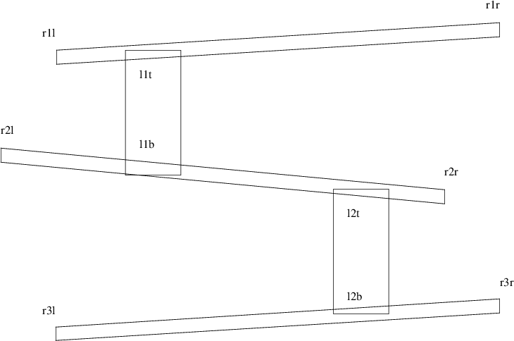

#!/usr/bin/env python3 import random # # the points are: l1t, l1b, l2t, l2b (ladder no. top and bottom) # r1l, r1r (ramp 1 left and right) # r2l, r2r (ramp 2 left and right) # r3l, r3r (ramp 3 left and right) # # # a barrel might go to the end of a ramp or occasionally to # a ladder returns a list of way points #
def gen_route ():
# moving along top ramp 1
route = ["r1r"]
if random.random () < 0.2:
route += ["l1t", "l1b"] # choose ladder
else:
route += ["r1l", "r2l"] # fall off end
# moving along top ramp 2
if random.random () < 0.2:
route += ["l2t", "l2b"]
else:
route += ["r2r", "r3r"]
# and move along ramp 3
route += ["r3l"]
return route
for b in range (7):
print gen_route ()
$ python3 kongroute.py
[’r1r’, ’r1l’, ’r2l’, ’l2t’, ’l2b’, ’r3l’] [’r1r’, ’r1l’, ’r2l’, ’r2r’, ’r3r’, ’r3l’] [’r1r’, ’r1l’, ’r2l’, ’r2r’, ’r3r’, ’r3l’] [’r1r’, ’r1l’, ’r2l’, ’l2t’, ’l2b’, ’r3l’] [’r1r’, ’r1l’, ’r2l’, ’r2r’, ’r3r’, ’r3l’] [’r1r’, ’l1t’, ’l1b’, ’r2r’, ’r3r’, ’r3l’] [’r1r’, ’r1l’, ’r2l’, ’r2r’, ’r3r’, ’r3l’]
def main ():
global screen
pygame.init ()
screen = pygame.display.set_mode ([width, height])
draw_scene (gradient)
play_game (screen)
wait_for_event ()
main ()
def play_game (screen):
o = -1
while True:
t = pygame.time.get_ticks()
if o != t:
activity_scheduler (t)
o = t
checkInput()
screen.fill([0, 0, 0]) # blank the screen.
draw_polygons ()
for b in barrels:
b.update (t, 0, width)
screen.blit (b.image, b.rect)
pygame.display.flip ()
# there are 1000 ticks per second in pygame
activity_list = [[2000, 0.5, create_new_barrel],
[1000, 1.0, display_time],
[120000, 1.0, finish_game]]
def activity_scheduler (ticks):
global activity_list
for e in activity_list:
if (ticks % e[0] == 0) and (random.random () <= e[1]):
e[2] (ticks)
def checkInput():
for event in pygame.event.get():
if event.type == KEYDOWN:
if event.key == K_ESCAPE:
sys.exit(0)
elif event.key == K_RIGHT:
print "right cursor pressed"
# do_right
elif event.key == K_LEFT:
print "left cursor pressed"
# do left
elif event.key == K_UP:
print "up cursor pressed"
# do_jump
class barrel_sprite (pygame.sprite.Sprite):
image = None
def __init__ (self):
pygame.sprite.Sprite.__init__(self)
if barrel_sprite.image is None:
barrel_sprite.image = pygame.image.load ("barrel.png").convert ()
self.image = barrel_sprite.image
self.radius = barrel_sprite.image.get_height()
self.rect = self.image.get_rect()
self.route = gen_route ()
self.rect.topleft = points[self.route[0]]
self.next_update_time = 0 # update() hasn’t been called yet.
self.nav = None
self.hop_goal = 0
def update (self, current_time, left, right):
global barrels
# Update every 10 milliseconds = 1/100th of a second.
if self.next_update_time < current_time:
if self.nav == None or self.nav.finished ():
if self.hop_goal == len (self.route)-1:
# finished all routes, delete ourself
self.kill ()
barrels.remove (self)
else:
# move onto next route
self.nav = p2pnav.walk_along (self.get_point (self.hop_goal),
self.get_point (self.hop_goal+1))
self.hop_goal += 1
self.rect.topleft = self.nav.get_next ()
self.next_update_time = current_time + 10
def get_point (self, goal):
if self.route[goal][-1] == ’b’:
# bottom of the ladder is adjusted upwards
return [points[self.route[goal]][0],
points[self.route[goal]][1]-self.radius]
elif self.route[goal][-1] == ’l’:
# left ramp way point is adjusted, so it falls off edge
x = points[self.route[goal]][0]-self.radius/2
elif self.route[goal][-1] == ’r’:
# right ramp way point is adjusted, so it falls off edge
x = points[self.route[goal]][0]-self.radius/2
else:
x = points[self.route[goal]][0]
# we do adjust the ramp height, to offset the circle height
return x, points[self.route[goal]][1]-self.radius/2
#!/usr/bin/env python3 import pygame, sys, time, random, bres from pygame.locals import * ramp_one, ramp_two, ramp_three = None, None, None wood_light = (166, 124, 54) wood_dark = (76, 47, 0) blue = (0, 100, 255) dark_red = (166, 25, 50) dark_green = (25, 100, 50) dark_blue = (25, 50, 150) black = (0, 0, 0) white = (255, 255, 255) ladder_colour = (58, 112, 106)
width, height = 1024, 768
screen = None
ramp_height = 0.03
ramp_length = 0.85
ladder_height = 0.3
ladder_length = 0.07
gradient = 32
points = {}
debugging = False
barrels = []
# # the points are: l1t, l1b, l2t, l2b (ladder no. top and bottom) # r1l, r1r (ramp 1 left and right) # r2l, r2r (ramp 2 left and right) # r3l, r3r (ramp 3 left and right) # # # a barrel might go to the end of a ramp or occasionally to a ladder # returns a list of way points #
def gen_route ():
# moving along top ramp 1
route = ["r1r"]
if random.random () < 0.2:
route += ["l1t", "l1b"] # choose ladder
else:
route += ["r1l", "r2l"] # fall off end
# moving along top ramp 2
if random.random () < 0.2:
route += ["l2t", "l2b"]
else:
route += ["r2r", "r3r"]
# and move along ramp 3
route += ["r3l"]
return route
class barrel_sprite (pygame.sprite.Sprite):
image = None
def __init__ (self):
pygame.sprite.Sprite.__init__(self)
if barrel_sprite.image is None:
barrel_sprite.image = pygame.image.load ("barrel.png").convert ()
self.image = barrel_sprite.image
self.radius = barrel_sprite.image.get_height()
self.rect = self.image.get_rect()
self.route = gen_route ()
self.rect.topleft = points[self.route[0]]
self.next_update_time = 0 # update() hasnt been called yet.
self.nav = None
self.hop_goal = 0
def update (self, current_time, left, right):
global barrels
# Update every 10 milliseconds = 1/100th of a second.
if self.next_update_time < current_time:
if self.nav == None or self.nav.finished ():
if self.hop_goal == len (self.route)-1:
# finished all routes, delete ourself
self.kill ()
barrels.remove (self)
else:
# move onto next route
self.nav = bres.walk_along (self.get_point (self.hop_goal),
self.get_point (self.hop_goal+1))
self.hop_goal += 1
self.rect.topleft = self.nav.get_next ()
self.next_update_time = current_time + 10
def get_point (self, goal):
if self.route[goal][-1] == "b":
# bottom of the ladder is adjusted upwards
return [points[self.route[goal]][0],
points[self.route[goal]][1]-self.radius]
elif self.route[goal][-1] == "l":
# left ramp way point is adjusted, so it falls off edge
x = points[self.route[goal]][0]-self.radius/2
elif self.route[goal][-1] == "r":
# right ramp way point is adjusted, so it falls off edge
x = points[self.route[goal]][0]-self.radius/2
else:
x = points[self.route[goal]][0]
# we do adjust the ramp height, to offset the circle height
return x, points[self.route[goal]][1]-self.radius/2
def xpos (v):
global height
return (int) (width*v)
def ypos (v):
global width
return (int) (height*v)
def draw_ramp (xoffset, yoffset, left_drop, right_drop):
global ramp_length, ramp_height
top_left = [xpos (xoffset), ypos (yoffset)+left_drop]
top_right = [xpos (xoffset+ramp_length), ypos (yoffset)+right_drop]
bot_right = [xpos (xoffset+ramp_length), ypos (yoffset+ramp_height)+right_drop]
bot_left = [xpos (xoffset), ypos (yoffset+ramp_height)+left_drop]
return pygame.draw.polygon (screen, wood_dark, [top_left, top_right, bot_right, bot_left], 0)
def draw_ramps (drop):
return [draw_ramp (0.1, 0.16, drop, 0),
draw_ramp (0.03, 0.48, 0, drop),
draw_ramp (0.1, 0.80, drop, 0)]
def wait_for_event ():
while True:
event = pygame.event.wait()
if event.type == pygame.QUIT:
sys.exit(0)
if event.type == KEYDOWN:
if event.key == K_ESCAPE:
sys.exit (0)
def add_points (ladders, ramps, gradient):
global points
for i, l in enumerate (ladders):
top = "l%dt" % (i+1)
bot = "l%db" % (i+1)
print top, bot
points[top] = [l.left, l.top-ypos (.045)]
points[bot] = [l.left, l.bottom-ypos (.019)]
for i, l in enumerate (ramps):
left = "r%dl" % (i+1)
right = "r%dr" % (i+1)
print left, right
if i % 2 == 0:
points[left] = [l.left, l.top]
points[right] = [l.right, l.top-gradient]
else:
points[left] = [l.left, l.top-gradient]
points[right] = [l.right, l.top]
def draw_scene (gradient):
global list_of_polygons
for i in range (gradient):
draw_ramps (i)
pygame.display.flip ()
screen.fill (black)
if not debugging:
time.sleep (.2)
l = draw_ladders (gradient)
r = draw_ramps (gradient)
list_of_polygons = l + r
pygame.display.flip ()
add_points (l, r, gradient)
print points
def draw_ladder (x, y, drop):
global ladder_length, ladder_height
top_left = [xpos (x), ypos (y)+drop]
top_right = [xpos (x+ladder_length), ypos (y)+drop]
bot_right = [xpos (x+ladder_length), ypos (y+ladder_height)+drop]
bot_left = [xpos (x), ypos (y+ladder_height)+drop]
return pygame.draw.polygon (screen, ladder_colour, [top_left, top_right, bot_right, bot_left], 0)
def draw_ladders (drop):
return [draw_ladder (0.2, 0.16, drop),
draw_ladder (0.7, 0.48, drop)]
def activity_scheduler (ticks):
global activity_list
for e in activity_list:
if (ticks % e[0] == 0) and (random.random () <= e[1]):
e[2] (ticks)
def create_new_barrel (ticks):
global barrels
barrels += [barrel_sprite ()]
def display_time (ticks):
print "time is", ticks/100
pass
def finish_game (ticks):
print "game over"
sys.exit (0)
# there are 1000 ticks per second in pygame
activity_list = [[2000, 0.5, create_new_barrel],
[1000, 1.0, display_time],
[120000, 1.0, finish_game]]
def checkInput():
for event in pygame.event.get():
if event.type == KEYDOWN:
if event.key == K_ESCAPE:
sys.exit(0)
elif event.key == K_RIGHT:
print "right cursor pressed"
# do_right
elif event.key == K_LEFT:
print "left cursor pressed"
# do left
elif event.key == K_UP:
print "up cursor pressed"
# do_jump
def draw_polygons ():
draw_ladders (gradient)
draw_ramps (gradient)
def play_game (screen):
o = -1
while True:
t = pygame.time.get_ticks()
if o != t:
activity_scheduler (t)
o = t
checkInput()
screen.fill([0, 0, 0]) # blank the screen.
draw_polygons ()
for b in barrels:
b.update (t, 0, width)
screen.blit (b.image, b.rect)
# pygame.display.update()
pygame.display.flip ()
def main ():
global screen
pygame.init ()
screen = pygame.display.set_mode ([width, height])
draw_scene (gradient)
play_game (screen)
wait_for_event ()
main ()
This document was produced using groff-1.22.
{kind=link}